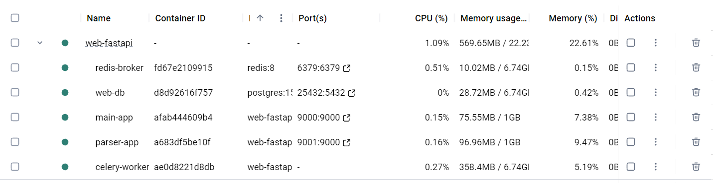
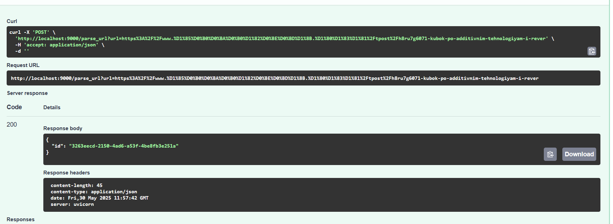
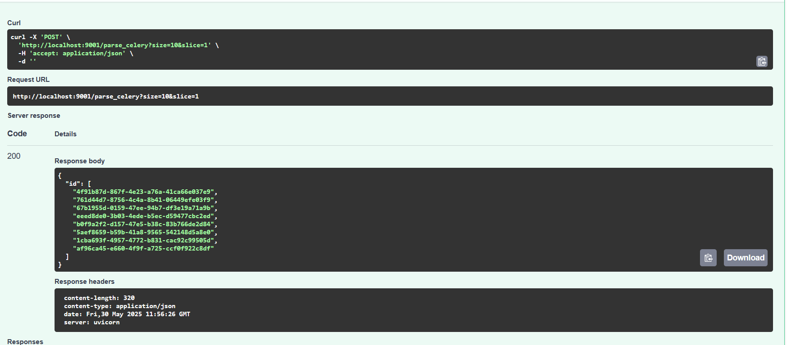
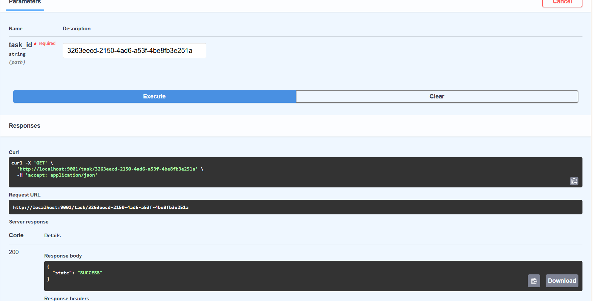
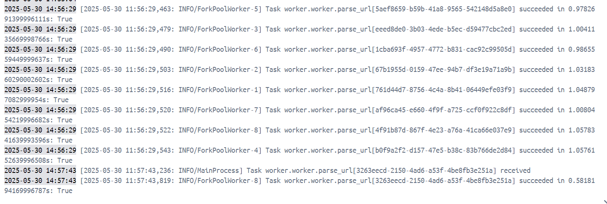

Вызов парсера из FastAPI через очередь
Текст задания
Установить и настроить Celery для создания очереди сообщений через Redis в качестве брокера.
Реализация
Была добавлена зависимость celery.
pip install celery[redis]
Рядом с приложением парсера был создан celery worker, который будет обрабатывать запросы на создание новых задач и возвращать результаты работы. Redis выступает в качестве брокера и в качестве хранилища результатов.
from celery import Celery
from dotenv import load_dotenv
from task2.parser import async_fetch_parse_load
import asyncio
import os
load_dotenv("app/.env")
redis_url = os.getenv("REDIS_URL", "redis://localhost:6379/0")
celery_app = Celery("worker", backend=redis_url, broker=redis_url)
@celery_app.task
def parse_url(url: str):
return asyncio.run(async_fetch_parse_load(url))
celery_app.conf.task_routes = {
"worker.parse_url": {"queue": "default"},
}
В приложение парсера были добавлены эндпоинты для добавления в очередь одного url-а, пачки url-ов, которые парсятся с сайта (так как это работало до этого, только сам парсер теперь вызывается в celery, а не ручками), а также эндпоинт для получения статуса задачи.
@app.post("/parse_celery")
async def parse_celery(size: int=10, slice: int=1):
urls = await async_get_urls(size, slice)
ids = []
for url in urls:
task = parse_url.delay(url)
ids.append(task.id)
return {"id": ids}
@app.post("/parse_url")
async def parse_celery_single_url(url: str):
task = parse_url.delay(url)
return {"id": task.id}
@app.get("/task/{task_id}")
async def get_task_status(task_id: str):
res = celery_app.AsyncResult(task_id)
if res.state == "FAILURE":
raise HTTPException(500, detail=str(res.result))
return {"state": res.state}
Наконец, вызов эндпоинта для одного url-а из основного приложения.
@app.post("/parse_url")
def parse_url(url: str):
session = requests.Session()
try:
r = session.post("http://parser-app:9000/parse_url",
params={"url": url})
except requests.exceptions.ConnectionError:
return {"detail": "connection error"}
if r.ok:
return r.json()
else:
return {"ok": False}
Теперь надо добавить в композ 2 контейнера - redis и наш celery worker.
redis-broker:
container_name: redis-broker
image: redis:8
ports:
- 6379:6379
parser-app:
container_name: parser-app
build: ./lr2
restart: always
depends_on:
- web-db
- redis-broker
pids_limit: 500
mem_limit: 1G
cpus: 2
ports:
- 9001:9000
command: "fastapi run app.py --port 9000"
celery-worker:
container_name: celery-worker
build: ./lr2
restart: always
depends_on:
- parser-app
command: celery -A worker.worker worker --loglevel=info
Редис билдится из готового образа с реестра. Celery воркер билдится тем же Dockerfile, что и приложение парсера, но из него был убран вызов команды fastapi. Теперь команда вызывается в композе.
Смотрим на поднятые контейнеры:

Проверяем работу:



